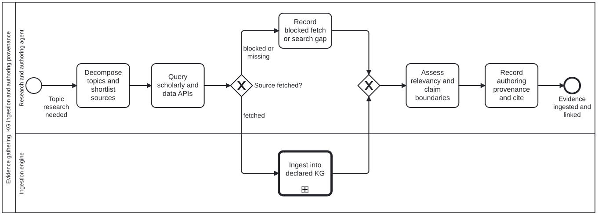

Generated from
cat-harness/skills/authoring/authoring-core/evidence-gathering-and-provenance.md— do not edit here.
Evidence gathering, Knowledge Graph ingestion, and authoring provenance
Skill id:
evidence-gathering-and-provenance· Package:authoring-coreProcess:processes/content/evidence-gathering-and-provenance.bpmn(Process_EvidenceGatheringAndProvenance)
Research is part of document authoring, not an unindexed prelude in scratch notes. Whenever a research or authoring agent investigates a topic to draft, revise, or verify content blocks, every external paper, specification, or reference dataset consulted enters the Knowledge Graph with its retrieval provenance and relevancy boundary recorded and linked to the blocks that rely on it.
Why scratch-note literature searches fail
Leaving discovered papers or constants as raw URLs in chat transcripts or temporary scratch files breaks three invariants at once:
- Later agents re-run the same search cold (or re-derive a theorem that an
un-ingested paper already settles), because corpus search sweeps declared
library/andreferences/graphs rather than session transcripts. - Unopened citations masquerade as verified sources, inviting recall-based
paraphrase of hypotheses, conventions, or editions that differ from the
printed source (
literature-search). - Reviewers cannot audit provenance when a block cites a claim without recording where the metadata and text came from, which theorem, section, or table row was checked, and where the source’s hypotheses stop.
The five-step workflow (STRICT)
Every topic investigation executes all five steps in order through
Process_EvidenceGatheringAndProvenance:
Step 1 — Topic area decomposition & source shortlist
Before drafting claims or launching unfocused web queries:
- Write up explicit research topic areas — partition the open question into named technical, mathematical, clinical, or policy sub-topics, stating the exact claim, definition, bound, or comparison each sub-topic needs.
- Compile a targeted shortlist per topic area of the primary papers, monographs, standards documents, and reference datasets (for example fundamental constants, nuclear or particle tables, clinical registries, or benchmark corpora) required to ground that topic.
- Check declared graphs first (
memory/,library/,references/,uploads/perliterature-search): anything already held is read in place; anything sitting inuploads/is handed straight to ingestion rather than fetched twice.
Step 2 — Multi-database discovery & authoritative retrieval
Query the scholarly, bibliographic, and domain databases accessible to the agent or user to resolve authoritative metadata (CSL-JSON) and open-access full texts or dataset files:
| source class | canonical APIs & endpoints | what to retrieve |
|---|---|---|
| DOI & Crossref | https://doi.org/<DOI> with Accept: application/vnd.citationstyles.csl+json, https://api.crossref.org/works/<DOI> | Authoritative CSL-JSON (title, author, issued, container-title, volume, page, DOI, license links) |
| Preprints & physics / math archives | arXiv (https://export.arxiv.org/api/query, https://arxiv.org/pdf/<id>.pdf), InspireHEP (https://inspirehep.net/api/literature), HAL, Numdam, Zenodo | Versioned preprint metadata, TeX source tarballs or open-access PDFs, and published-journal DOI cross-links |
| Biomedical & life-science databases | PubMed / NCBI E-utilities (eutils.ncbi.nlm.nih.gov), PubMed Central / EuropePMC (www.ebi.ac.uk/europepmc/webservices/rest) | PMID / PMCID records, MeSH descriptors, structured abstracts, and open-access full-text XML or PDFs |
| Broad scholarly indexes | OpenAlex (https://api.openalex.org/works), Semantic Scholar (https://api.semanticscholar.org/graph/v1/paper), Google Scholar (when accessible to the agent or user), Unpaywall, DOAJ, CORE | Citation graphs, open-access PDF locations (best_oa_location), disambiguated author/venue records, and forward/backward citation trails |
| Reference data registries | Publisher constants & evaluation tables (for example NIST / CODATA, AME, PDG, WHO GHO, clinical value-set servers) | Exact machine-readable ASCII/CSV/JSON releases with edition identifier, SHA-256 checksum, and stated reuse license |
| Mathematical sequence, knot & number-theory databases | OEIS (https://oeis.org/search?fmt=json&q=... across unit-rescaled, factorial-cleared, logged cumulant, and unlogged exponential forms), KnotInfo / LinkInfo / SnapPy / Regina, LMFDB (https://www.lmfdb.org/api/), plus >= 80 dps PSLQ constant recognition (online-sequence-and-knot-databases) | Exact sequence IDs (OEIS Axxxxxx), topological/hyperbolic/polynomial invariants, number-field & $L$-value labels, verified closed forms, and cited primary literature to ingest |
Preserve the three-state retrieval outcome from
literature-search:
- Found and fetched: open-access file placed in
uploads/with the exact service URL recorded. - Found, but blocked from this runtime (proxy 403, login wall, paywall,
network fence): report the full citation, one-sentence summary, direct
download URL, and plain-language fetch blocker so the person can drop the
file into
uploads/(or record a blocked work item viabean-blocking, opt-incat-harness.work-plan). Never collapse a network block or paywall into “not found”. - Not found: record every database queried and why the closest candidates were rejected so no later agent repeats the dead end.
Step 3 — Knowledge Graph ingestion (zero unindexed scratch URLs)
Every retrieved artifact is ingested into the instance’s declared Knowledge Graph directories — never left as an unindexed URL in notes:
- Bibliographic reference nodes (
references/): write or update a validatedfolio-reference/v1CSL-JSON node carrying persistent identifiers (DOI,PMID,PMCID,URLto direct open-access mirror alongside the canonical DOI). - Full-text documents (
uploads/$\to$library/<doc-id>/): runlibrary-ingestion(bun run cat ingest,Process_Ingestion) so section text, structure, page-1 cover (library:covers), extracted reference lists (extracted-references/), and upload retirement (fsh-guts/uploads/) are all materialized in the graph. - Reference datasets (
library/<dataset-edition>/) and corpus descriptors (sources/): ingest tabular reference datasets with exact decimal strings, edition,primaryUrl,obtainedFrom,retrievedAt, SHA-256, andlicence.json, so every constant is addressable in prose rather than hard-coded. - Verification records (
attestations/): record bibliography and source verification status (confirming that the fetched PDF or table matches the CSL-JSON work rather than a landing page or volume front matter).
Step 4 — Relevancy & claim-boundary assessment
Never cite a source from its title or search snippet alone. Open the ingested
library/<doc-id>/ sections (or dataset records) and record a structured
relevancy assessment for each shortlisted source:
- Exact locator: section, theorem, lemma, proposition, equation number, page, or dataset slug/row.
- What it establishes for the topic: the precise mathematical, empirical, or normative statement under the source’s own conventions and normalisation.
- Hypotheses & domain of validity: parameter regimes, regularity or ring assumptions, measurement epoch/edition, or population scope required for the cited result to hold.
- Claim boundary (what it does not establish): where the source stops, which steps remain this folio’s own obligation, and any convention translation needed before combining it with other blocks.
When a source turns out irrelevant or refutes a candidate hypothesis, keep the ingested node and record the negative assessment so sibling and successor sessions do not re-fetch or re-propose it.
Step 5 — Document authoring integration & provenance linkage
Close the loop inside the authored content blocks so provenance survives both in the authoring record and in the published artifact:
- Authoring-process provenance notes: record the retrieval and
verification provenance — database/API queried, persistent identifier
(
DOI/arXiv/PMID), retrieval date, exact locator, and the Step 4 relevancy and claim-boundary summary — in the block’s authoring notes (authorNoteson block manifests, companion attestation sidecars underattestations/, and the active work item’s notes inbeans/). - Formal citation & value edges in authored blocks: wire explicit machine-
checked links wherever the block relies on the source:
- narrative and formal citations (
cites: [...],\cite{<key>}/#cite:<key>, and-- Ref: [<key>] <Author, Theorem X.Y>in formal proof files); - Liquid dataset and witness references
(
{{ <instance>.library.<entry>.<slug> }}) for every empirical or tabulated constant; - editorial dependency edges (
uses[],uses-editorial-review) between internal blocks.
- narrative and formal citations (
Checklist before marking research-backed authoring complete
- Topic areas written up with an explicit shortlist of needed papers and datasets before drafting.
- Accessible scholarly and data APIs queried (Crossref/DOI, arXiv, PubMed/EuropePMC, InspireHEP, OpenAlex, Semantic Scholar, Google Scholar, domain registries); blocked fetches reported with direct download links rather than marked missing.
- All retrieved references, open-access full texts, and datasets ingested into declared KG subgraphs (
references/,library/,sources/,extracted-references/,attestations/) — zero bare scratch-only URLs. - Each cited source opened and assessed for exact locator, hypotheses/conventions, and claim boundaries.
- Retrieval and relevancy provenance recorded in authoring notes / attestations AND formal citation / Liquid value links wired in every citing block.
Related skills
literature-search— three-state open-access lookup and the ban on paraphrasing unopened sources.online-sequence-and-knot-databases— mandatory OEIS (logged/unlogged/torsion-rescaled), KnotInfo/LinkInfo/SnapPy/Regina, LMFDB, and>= 80 dpsPSLQ lookup protocol for computational and mathematical research.library-ingestion—uploads/$\to$library/<slug>/ingestion (Process_Ingestion), covers, and upload retirement.content-acquisition— accepting unprompted drops and asking the person for unreachable sources.evidence-review&evidence-appraisal— untainted appraisal of an assembled body of evidence.scientific-accuracy— quantitative, notation, and logical accuracy checks over citing prose.
Processes that run this skill
This skill has its own process: Evidence gathering and provenance.

Actors: Research and authoring agent · Ingestion engine
| process | step(s) that name it |
|---|---|
| Evidence gathering and provenance | Decompose topics and shortlist sources; Query scholarly and data APIs; Ingest into declared KG (calls a sub-process); Assess relevancy and claim boundaries; Record authoring provenance and cite |
| Research delegation and niche routing | Investigate niche and ingest KG evidence (calls a sub-process) |